登記 20.26 坪，主建物就是 20.26 坪——附屬建物與公共設施都沒有登記面積，你付的每一坪都在門裡面。三面採光，房間與衛浴都有對外窗，全新裝潢、水電管線已更新、天然瓦斯。
同一張委託資料上另外標了一行紅字「陽台未登記」：那個空間你用得到，但不在權狀裡、也不進銀行鑑價，下面我拆給你看。
委託總價 1168 萬，開價不等於成交價。
每一頁都是我本人先講一次。看完影片再往下，下面的東西你想看哪個就點哪個。
先看這支再往下滑，下面的字是給想確認細節的人。
片中依序講：雙北二十坪常見的採光取捨、這棟 55 年公寓三個房間與兩套衛浴全部有對外窗、權狀 20.26 坪就是門內實坪（附屬建物與公共設施都沒有登記面積）、三房兩廳雙衛浴怎麼切、55 年屋齡的水電管線已全面換新並接通天然瓦斯、後段未登記陽台多出來的使用空間、捷運府中站約 1,000 公尺與湳雅、府中雙商圈——全片是手繪與示意圖，不是本案現況。實際格局看下面「格局圖」，屋況看下一支 73 秒完整動線影片與「屋況實拍」。
兩件影片沒有講完、這一頁有講的：未登記陽台你用得到，但不列入權狀、也不進銀行鑑價，比價與貸款一律用 20.26 坪算，拆解在「這間的引擎」那一段；缺點與抗性在「缺點與抗性拆解」那一段一條一條攤開。影片內的數字與費用一律以本頁各段為準。
帶看當天的原始素材，沒有配樂、沒有調色、沒有虛擬佈置，也沒有剪短。
毛片 73.8 秒、上架 73.8 秒，一秒沒剪，只去掉現場收音。三面的窗、兩間衛浴的對外窗、廚房與後段陽台的現況，你自己看一遍再決定要不要花時間跑一趟。
我把這間房子拆成 9 段，每段先給你短版——想看細節再點「看完整版」，不想看的就直接跳過。
坪數怎麼算、屋況實拍、格局、生活圈、缺點的答案、錢怎麼算，全部都在這一頁。
不知道從哪看起，就先點第一張「這間適合誰」——30 秒就知道要不要往下。
開價不等於成交價
附屬建物與公共設施都沒有登記面積
陽台未登記，不列入權狀，也不進銀行鑑價
建築完成日 60 年 2 月
| 委託總價 | 1168 萬本案無車位。開價不等於成交價，實際成交金額由買賣雙方議定。 |
|---|---|
| 登記坪數 | 20.26 坪與主建物坪數相同 |
| 主建物 | 20.26 坪登記的 20.26 坪全部是主建物，門裡面的實際坪數 |
| 附屬建物 公共設施 | 都沒有登記面積委託資料這兩格沒有數字，登記坪數與主建物坪數又完全相同——這 20.26 坪裡沒有一坪是公設。另外，格局圖右側標了紅字「陽台未登記」，那個空間不列入權狀，也不進銀行鑑價。 |
| 土地面積 | 8.77 坪與建物分開的另一筆，比價時不要算進 20.26 坪裡 |
| 格局 | 3 房 2 廳 2 衛格局圖上是臥室 2 間＋主臥室、客廳、餐廳、廚房、浴室 2 間 |
| 樓層 | 4 樓地上 4 層・每層 2 戶——本戶在最上面那一層 |
| 屋齡 | 55 年建築完成日 民國 60 年 2 月 |
| 方位 | 朝西下午會西曬，帶看我建議約下午，你自己站一次最準 |
| 面臨路寬 | 11 米門口不是窄巷，搬家與工程車輛進出條件寬鬆 |
| 車位 | 本案無車位周邊月租停車場的位置與費用，看屋當天我陪你走一趟問 |
| 現況 | 空屋影片與照片是委託當時拍的畫面，屋內的家具是拍攝當時的佈置；是否隨屋留下，以買賣契約與點交清單為準，這一項帶看當天我當你的面跟屋主確認。 |
| 管理費 | 這一棟地上 4 層、每層 2 戶怎麼收、收多少、有沒有欠繳，看屋當天我陪你到現場問一次 |
| 地點 | 新北市板橋區・南雅西路二段公開版不揭露完整門牌 |
登記坪數與主建物坪數完全相同，中間沒有公設這一段
土地面積 8.77 坪是另一筆，比價不要混進去
陽台未登記：用得到，但買不到、也貸不到
比價與貸款一律用登記的 20.26 坪算
委託資料上的三個數字要一起看：登記坪數 20.26 坪、主建物 20.26 坪、附屬建物與公共設施都沒有登記面積。三個數字擺在一起只講一件事——你付的每一坪都在門裡面，中間沒有公設那一段。
面積與隔間最終以地政謄本、測量成果圖及不動產說明書記載為準。
全部從上面那支 73 秒動線影片截出來
現況欄記載空屋，畫面裡的家具是拍攝當時的佈置
是否隨屋留下以買賣契約與點交清單為準
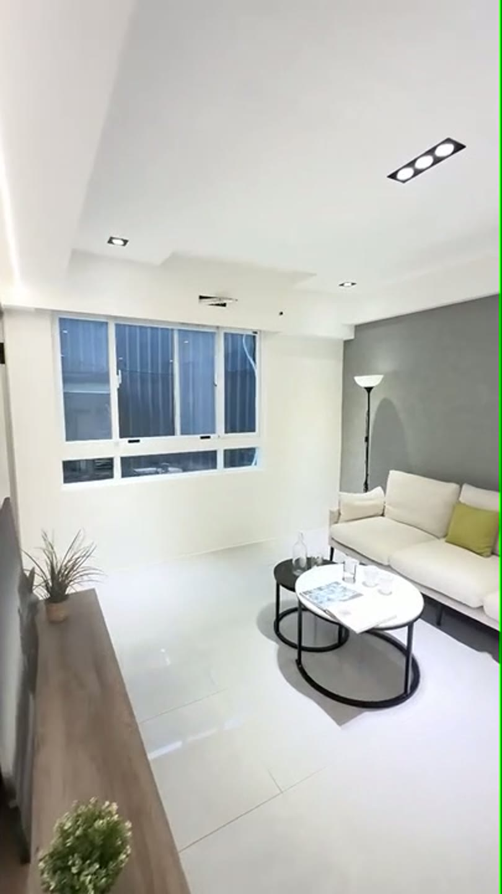
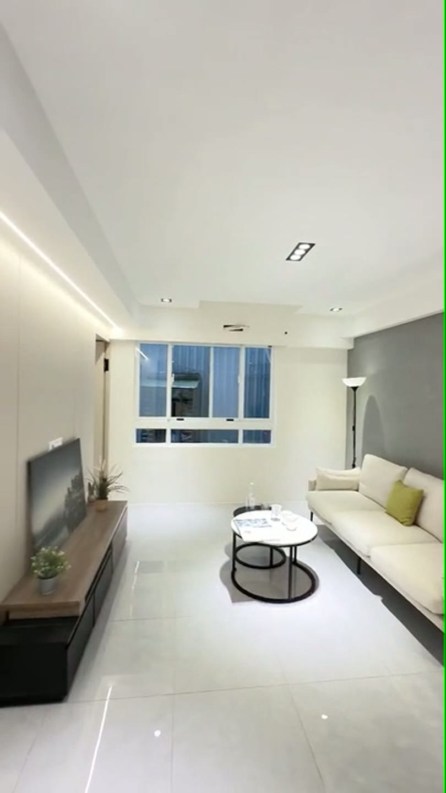
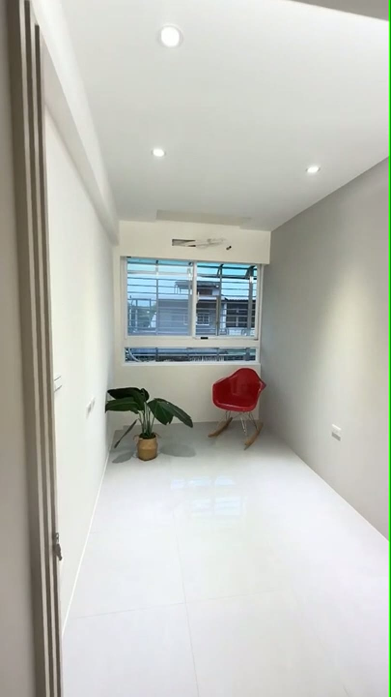
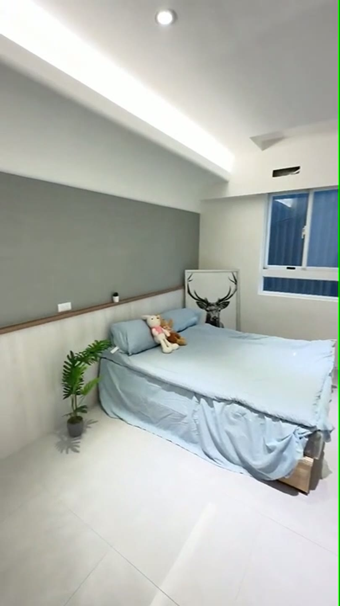
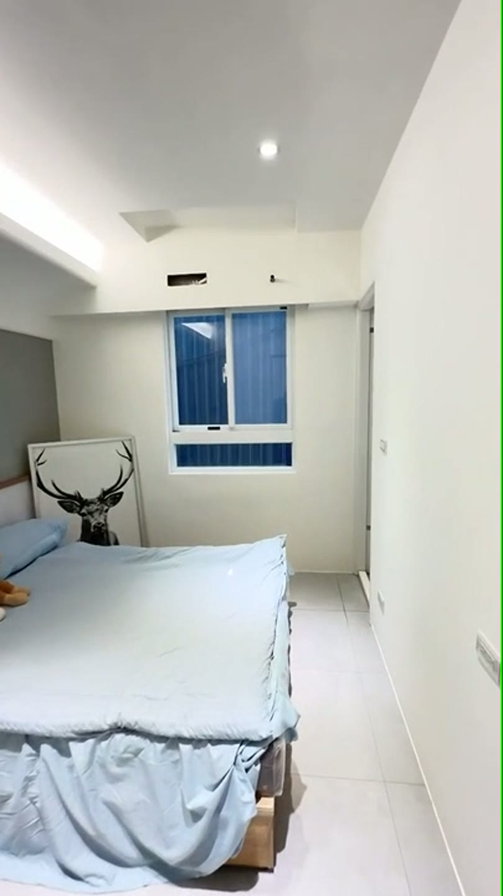
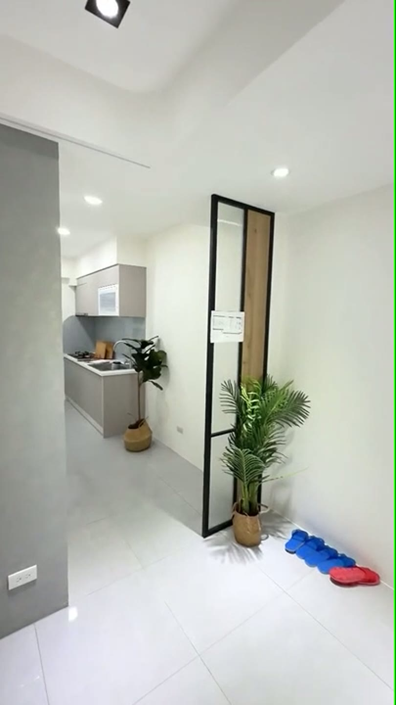
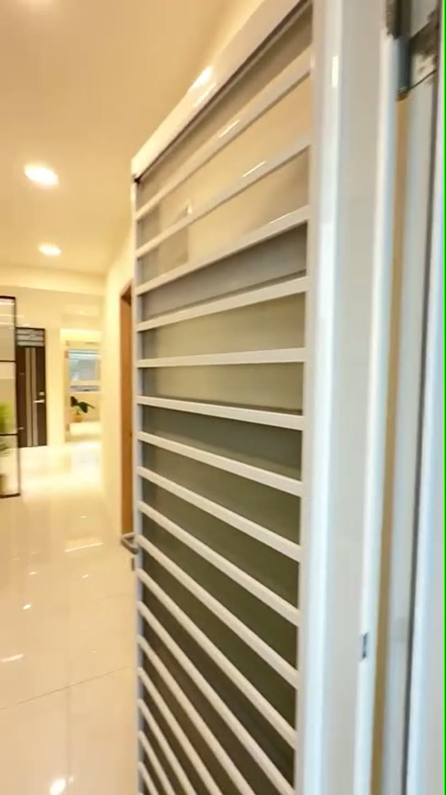
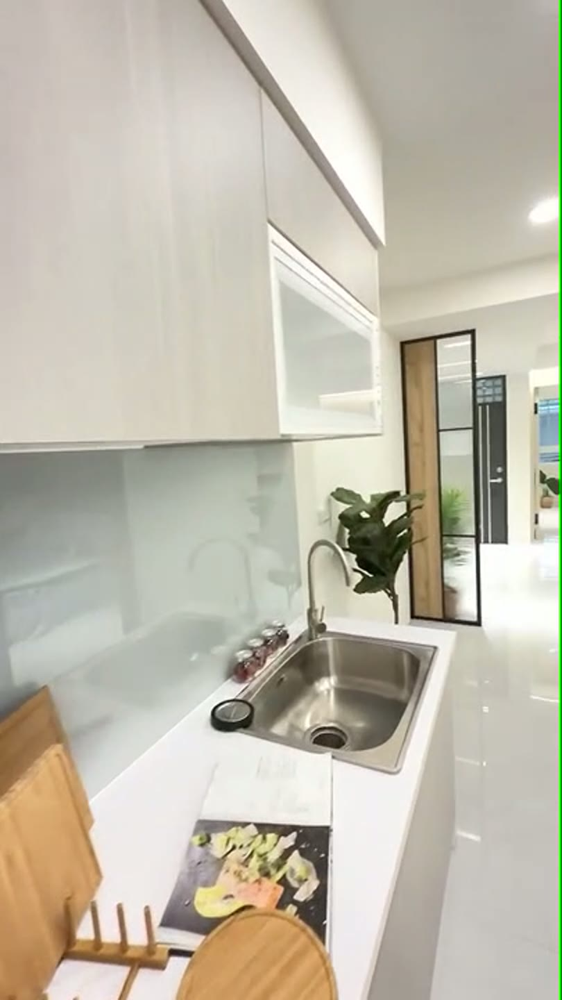
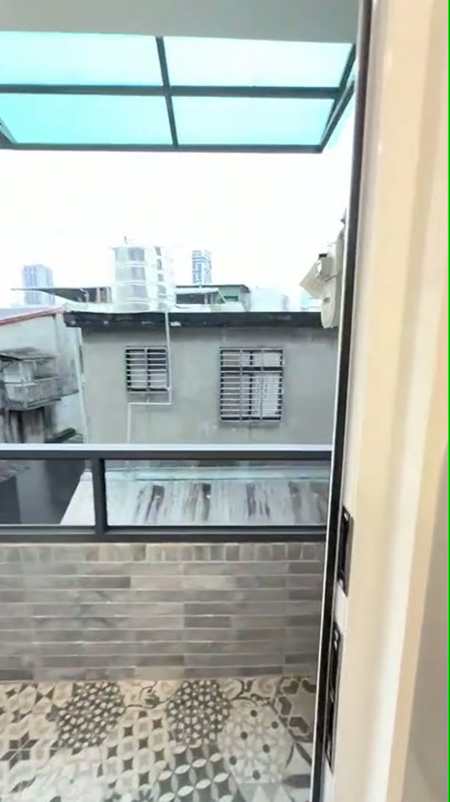
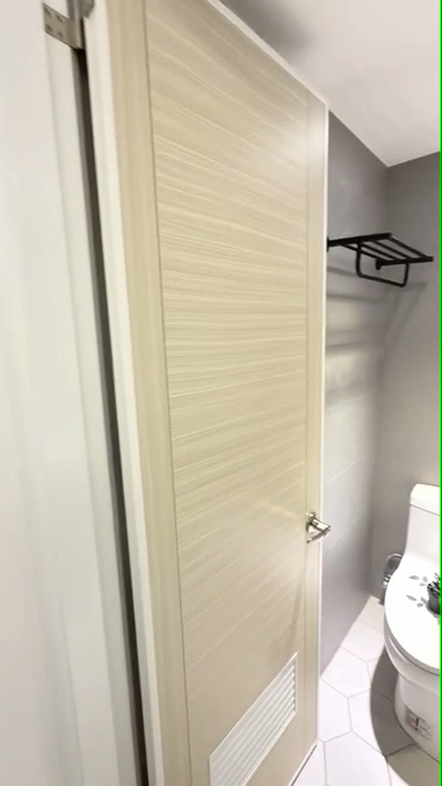
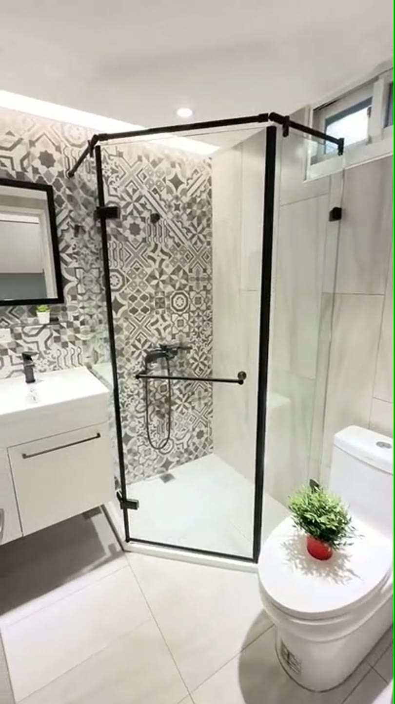
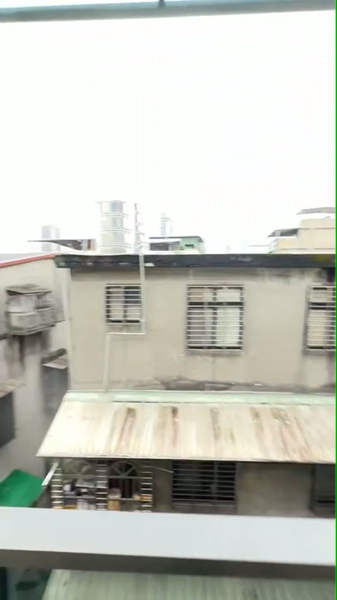
照片全部從上面那支 73 秒動線影片截出來，沒有另外修圖，也沒有做虛擬佈置。
最後一張是窗外看出去的樣子——這一帶是老市區，對面就是鄰棟的屋頂與加蓋，我照原樣放上來，不挑角度。
委託資料現況欄記載為空屋；畫面裡的家具是拍攝當時的佈置，是否隨屋留下以買賣契約與點交清單為準，這一項帶看當天我當你的面跟屋主確認。
圖右側紅字「陽台未登記」是委託資料原圖標示
不列入權狀，銀行鑑價也不列入
比價與貸款一律用登記 20.26 坪算
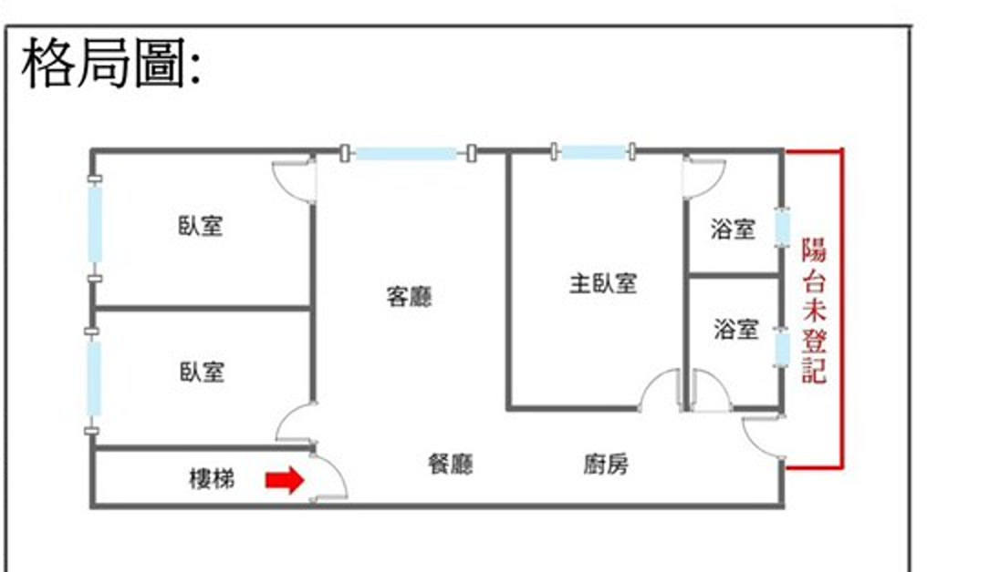
本戶方位朝西（委託資料方位欄記載）。左半邊兩間臥室，右半邊主臥室與兩間浴室，客廳、餐廳、廚房串在中間，左下角是樓梯間。
圖右側那行紅字「陽台未登記」是委託資料原圖上的標示：未登記的部分不列入權狀範圍，銀行鑑價也不列入，所以貸款成數是以登記的 20.26 坪去算的。這在台灣的中古公寓非常普遍，法規要求格局圖必須據實標示，所以圖上會看到。
新北市違章建築案件查詢，簽約前我照流程幫你查一次，結果書面給你，這不用你花錢。
本格局圖僅供參考，仍需以現況格局為主（委託資料原圖註記）；面積、隔間與方位以地政謄本、測量成果圖及不動產說明書記載為準。
捷運府中站約 1,000 公尺
公車【林家花園】站 264、701、702、793、內科通勤專車 21
面臨路寬 11 米
周邊環境帶看當天我陪你走一圈
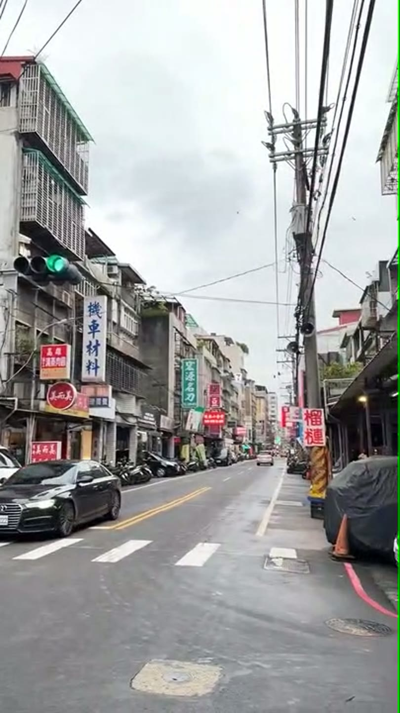
這兩張是拍攝當天的實景，沒有調色。周邊環境帶看當天我陪你走一圈，看到什麼就是什麼——白天什麼樣、晚上什麼樣、車位好不好停，現場走一次比看十張照片準。
本頁不列每坪單價
同路段逐筆成交紀錄內政部實價登錄查得到
開價不等於成交價
看房子最後都會卡在同一句話：「這樣的價格算不算合理？」我把功能一項一項拆開讓你自己比，我不給你一個總分，因為分數是我的權重，不是你的。
這筆錢買到的坪數，實際分到哪裡去——橫條長度＝該項佔登記坪數的比例，共用同一把尺（登記 20.26 坪＝100%）。本頁不列每坪單價。
坪數依委託資料與地政謄本登載。開價不等於成交價，實際成交金額由買賣雙方議定；面積最終以地政謄本與測量成果圖為準。本頁不列每坪單價。
用同一個門檻逐項判定：從社區走到軌道站的距離，滿格為 1,000 公尺。
距離依委託帶看資料所載，取整百公尺；公車路線依委託資料公車站名欄記載。實際班次與路線以各客運公司公告為準。
逐項列出委託資料上記載的生活機能，不加總分、不加形容詞。
機能項目依委託資料環境欄記載。學區以完整門牌與當學年度官方公告為準。
同社區與同路段的逐筆成交紀錄，我手上沒有可以直接貼上來的整理版，所以這一格我留白，不拿沒查證的數字充版面。
開價不等於成交價，最終金額由買賣雙方議定。
由屋主清空後點交，清運不進你的預算
責任歸屬在賣方，契約載明
權屬與維護責任點交前由地政士確認並寫進契約
違建查詢我照流程查，書面給你
由你決定，不是必須花的錢
預算看九個工種公開行情
以上是制度上的處理方式，不是對本案個別條件的保證。實際點交範圍、責任歸屬與修繕方式，以買賣契約與不動產說明書記載為準。
交易條件不是瑕疵，月租車位帶看當天問到價
樓梯與搬家動線現場走一次
權屬與責任寫進契約，違建查詢我查
不列入權狀與鑑價，一律用 20.26 坪算
下午西曬，帶看約下午自己站一次
以上每一條都指得出委託資料上的哪一欄或哪一行，我沒有多寫一項。這是制度上的處理方式，不是對本案個別條件的保證；實際點交範圍、責任歸屬與修繕方式，以買賣契約與不動產說明書記載為準。每一項的驗法，帶看當面逐項看。
估算不是核貸結果
青安要簽自住切結，與出租互斥
青安認的是謄本上的建物主要用途
成數、利率與年限由承貸銀行依鑑價核定
先做貸款預審再出價，預審我幫你約
契稅、代書費、火險不在上表
以開價 1168 萬、利率 2.435%、貸 30 年、本息均攤試算。這是估算不是核貸結果，實際成數、利率與年限由承貸銀行依鑑價與你的條件核定。
買方能力試算工具在這裡，你可以把自己的數字帶進去重算一次：
https://0930848000.com/tools/#/loan
| 成數 | 首付 | 寬限期內 只繳息 | 寬限期後 本息均攤 |
|---|---|---|---|
| 7 成 | 350.4 萬 | 16,590 元 | 32,029 元 |
| 7.5 成 | 292.0 萬 | 17,776 元 | 34,317 元 |
| 8 成 | 233.6 萬 | 18,961 元 | 36,605 元 |
先看左邊那欄。房貸多半有寬限期，這段期間只繳利息不還本金，月付大約是右邊那欄的一半。寬限期結束後才會跳到右邊的數字——兩個數字我都給你，你要用能長期負擔的那個去判斷。
年限我用 30 年抓，成數列了三種。實際核貸年限與成數由承貸銀行依鑑價與你的條件核定，跑完預審就知道確切數字——預審不用錢也不影響信用，時間我幫你約。
先做貸款預審，知道銀行給你多少，再決定要不要出價。預審不用錢也不影響信用，店裡有長期配合的銀行，我可以幫你約。另外還有契稅、代書費、火險與過戶規費，這些不在上表裡，帶看當天我一起算給你聽。
這間真正值錢的地方是「登記 20.26 坪，主建物就是 20.26 坪」——附屬建物與公共設施都沒有登記面積，你買的每一坪都在門裡面，而且這 20.26 坪做出了 3 房 2 廳 2 衛。再加上三面採光、房間與衛浴都有對外窗、全新裝潢與已更新的水電管線，難的是這些條件同時出現在 1168 萬這個總價帶。
它要你接受的也很清楚：沒有車位、4 樓、方位朝西下午會西曬、頂樓有鐵皮、陽台未登記。這五件我都寫在上面，沒有留到帶看那天。
所以判斷很簡單：你要的是「三房而且每一坪都在門裡面」，還是「有車位、有登記公設的社區型產品」？是前者，這間的結構對你就是紮實的；是後者，同樣的預算我幫你找配套齊的，我手上還有別間。
合不合，比買不買重要。覺得條件對得上，下面約我看現場。
再便宜的房子，你也會嫌貴——因為它不適合你。
再方便的地段，也有人覺得不對。不同的人要的根本不是同一件事：有人一定要車位，有人只要三房；有人非得電梯不可，有人覺得四層樓走上去剛好。這些沒有誰對誰錯，只有合不合。
台灣有句老話——「福地福人居」。
你要是喜歡這間，我們先去看現場。價格的事交給我去跟屋主談，看能不能再往成交靠近一步。買賣不是一場你砍我擋的拉鋸，中間這個環節本來就是我要做的事，把它做好，這筆交易才會是良性的。
委託資料現況欄記載為空屋，看屋時間相對好約。想約下午看西曬、或想上頂樓看鐵皮現況，跟我說一聲就好。
本頁所有資料不構成投資建議，最終仍以官方資料與謄本記載為準。